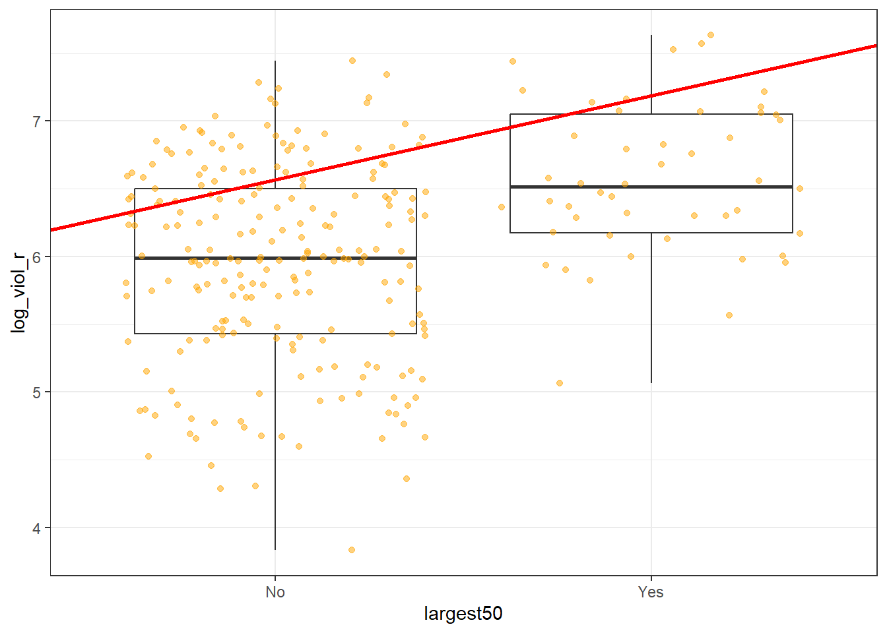

Chapter 12 Regression I
12.1 Hypotheses: The logic of hypothesis testing
In the last unit, we learned how to think about and build confidence intervals. We explained how we could use confidence intervals to deal with uncertainty when estimating population parameters. Confidence intervals as we will see are very commonly used in statistics. The other key inferential tool in data analysis is the hypothesis test. Today, we will focus on this second tool.
Last week, we saw how we could use confidence intervals as well to form a view about whether there are differences across groups in the population. We also saw how we could do “inference by eye” by virtue of visually comparing the confidence interval for the estimated mean value of fear for men and the estimated mean value of fear for women. Now, we are going to use a different approach to make inferences about the existence of these differences in the population: hypothesis testing.
Wikipedia defines a statistical hypothesis test as “a method of making decisions using data from a scientific study”. The logic of hypothesis testing is based on the work of a number of pioneers in the field of statistics, the British Ronald Fisher and Egon Pearson and the Polish Jerzy Neyman. This work is so important that some people argue that Sir Ronald Fisher is one of the most influential academics in the history of science; not a small feat!
Hypothesis testing, or null hypothesis testing (NHST) as it is often referred to, proceeds in a number of steps.
1.We always start with a research question
Our research questions in criminology can vary: Are ethnic minorities more likely to be stopped and searched? Does punishing offenders reduce crime? Is crime going down? Is self-control associated with offending? Here we are asking, are women more afraid of violent crime than men?
2.To answer a research question, we have to formulate at least one and sometimes several research hypotheses related to it
A research hypothesis is simply a proposed answer to our research question that we can test by carrying out some research. Research hypothesis can be directional and non-directional:
“When the research hypothesis does not indicate a specific type of outcome, stating only that there is a relationship or a difference, we say that it is a non-directional hypothesis. However, in those cases where a researcher has a very clear idea of what to expect -based on prior research evidence and/or theory -the research hypothesis may be more precise. In this case, the researcher may specify the nature of the relationship that is expected. Such a research hypothesis is called a directional hypothesis. When a directional hypothesis is used, the researcher states at the outset that he or she is interested in a specific type of outcome -for example, that one group has more arrests than another. Suppose we are interested in comparing the arrest records of drug-involved offenders with those of offenders who do not use drugs. Our research hypothesis might be simply that the arrest records of drug-involved offenders and offenders who do not use drugs are different (a nondirectional hypothesis). But based on prior knowledge of criminal behaviour among drug-involved offenders, we might want to state a directional hypothesis -that drug-involved offenders have more serious arrest records than non-drug-involved offenders do. One problem with choosing the latter option is that if we state our research hypothesis as a directional hypothesis, we are stating that we are not interested in outcomes that fall in the opposite direction. In criminal justice research, we can often be surprised by what we learn in a study. Accordingly, researchers generally are cautious in defining a directional research hypothesis” (Weisburd and Britt, 2010: 120)
In our example, the research hypothesis will be non-directional and simply state that there are differences in the fear of violent crime among men and women.
- The following step is to formulate what is called a null hypothesis
In frequentist statistical inference we test hypothesis not in reference to the research hypothesis but in reference to the null hypothesis. The null hypothesis gains its name from the fact that it usually states that there is no relationship or no difference. “We make decisions about the hypothesis in relation to the null hypothesis rather than the research hypothesis. This is because the null hypothesis states that the parameter in which we are interested is a particular value” (Weisburd and Britt. 2010: 122).
In the example that we are using, the null hypothesis would be that there is no difference in the mean level of fear for males and females. This is the same than saying that the difference on fear for these two groups is zero. So, using the null hypothesis gives us a specific value. Typically, this value is zero, whereas the research hypothesis would be consistent with any of many values other than zero. We will see in a second why working with a precise value such as zero is helpful.
De Veaux et al. (2012) explain the logic of hypothesis testing as being similar to the logic of jury trials. In jury trials within the Common Law tradition, somebody is innocent until proven guilty:
“the null hypothesis is that the defendant is innocent… The evidence takes the form of facts that seem to contradict the presumption of innocence. For us” (researchers) “this means collecting data… The next step is to judge the evidence. Evaluating the evidence is the responsibility of the jury in a trial, but it falls on your shoulders in hypothesis testing. The jury considers the evidence in light of the presumption of innocence and judges whether the evidence against the defendant would be plausible if the defendant were in fact innocent. Like the jury, you ask, ‘Could these data plausibly have happened by chance if the null hypothesis were true?’ If they are unlikely to have occurred, then the evidence raises a reasonable doubt about the null hypothesis. Ultimately, you must make a decision. The standard of beyond a reasonable doubt is wonderfully ambiguous… But when you ask the same question of your null hypothesis, you have the advantage of being able to quantify exactly how surprising the evidence would be were the null hypothesis true” (De Veaux et al. 2012: 479)
So, in hypothesis testing, we look at our observed sample data. In our case, we look at the difference in fear of violent crime for males and females, and we ask ourselves the question: is the observed difference likely to have come from a population where the real difference is zero (as our null hypothesis specifies)? As you can see, testing against the null gives us the advantage of testing against a specific value. We can compare the value that we observe with zero, the precise value hypothesised by the null hypothesis. The downside of it is that few things are exactly the same in nature. So, to say that the level of fear of crime in men and women is probably not exactly the same (e.g., a difference of zero) is arguably not always going to give us the answer that we want.
- The fundamental step in hypothesis testing, therefore, is the question: are the observed data surprising, given the null hypothesis? The key question is to determine exactly how likely the data we observed would be were the null hypothesis a true model of the world
So in essence we are after a probability, specifically a conditional probability (i.e, the probability of our data if the null hypothesis were true). We are trying to quantify the probability of seeing data like the one we have observed (a difference of 0.79 in our example) if we take as given that the null hypothesis is true (and the value “should be” zero). We call this probability the p value. You may have heard this term before. All it means, it bears repeating, is the probability of observing our data if the null hypothesis were true.
“When the p value is high, then we can conclude that we have not seeing anything unusual. Events that have a high probability of happening happen often. The data are thus consistent with the model from the null hypothesis, and we have no reason to reject the null hypothesis. But we realize many other similar hypotheses could also account for the data we’ve seen, so we haven’t proven that the null hypothesis is true. The most we can say is that it doesn’t appear to be false. Formally, we fail to reject the null hypothesis. That’s a pretty weak conclusion, but it’s all we’re entitled to. When the p value is low enough, it says that it’s very unlikely we’d observed data like these if our null hypothesis were true. We started with a model. Now, the model tells us that the data are unlikely to have happened. The model and the data are at odds with each other, so we have to make a choice. Either the null hypothesis is correct, and we’ve just seen something remarkable, or the null hypothesis is wrong…” (De Veaux et al. 2012: 480)
When is a p value high and when is low? Typically, we use criteria similar to those we use when constructing confidence intervals: we would consider a p value low enough if 95% of the time the observed data was considered to be inconsistent with the model proposed by our null hypothesis. So, we look for p-values that are smaller or bigger than 0.05.
That is, we look for differences that happen less than 5% of the time before we tentatively reject the null hypothesis. However, there is nothing sacrosanct about 95% and you could have good reasons to depart from this criterion (read page 123 to 128 of Weisburd and Britt, 2010 for further details). In fact, only last year, a number of researchers argued we should use a more stringent p value to address the crisis of reproducibility in science.
You will see that statistics books refer to the threshold we use to define a p-value as high or low as our level of statistical significance (also often referred to as the alpha level). In our example here (and all the others we will use this semester), we will use an alpha level of 0.05. That is, we will reject the null hypothesis only if our p level is below that threshold.
- After defining our research and null hypothesis and having taken a decision of how low our p value ought to be in order to reject the null hypothesis, we need to specify a model for testing this null hypothesis. All models make assumptions, so an important part of specifying a model is stating your assumptions and checking that they are not being violated.
Throughout the semester, we will cover a number of statistical tests, all with their own assumptions. These tests are appropriate in different circumstances (defined by their assumptions). Basically, what we will be doing in the remaining thematic units this semester is to explain what those circumstances are for each test so that you can choose the right one on each occasion. We will see later the assumptions made by the sort of hypothesis tests you use to compare means across groups.
- Once we’ve gone through all those steps comes the calculation of the test statistics and, based on the results, our decision
Different tests that we will encounter this semester have different formulas. Sometimes I will give you a basic description of what those formulas are doing, because it is good to know what is being computed for conceptual understanding. But the mechanics are handled by the computer. You won’t need to memorise those formulas nor calculate anything yourself.
The ultimate goal of these statistical tests for hypothesis testing is to obtain a p-value: the probability that the observed statistic (or a more extreme value) occurs if the null model is correct. If the p value is small enough (smaller than our alpha level: such as 0.05) then we will “reject the null hypothesis”. If it is not, we will “fail to reject the null hypothesis”. The language is important.
Whatever you decide, the American Psychological Association Statistical Committee recommends that it is always a good idea to report the p-value as an indication of the strength of the evidence. That is, not only report the finding to be significant or not, also report your actual p value.
One final word. P values have attracted a lot of debate over the years. They are often misunderstood, and people often read too much into them. They have also been used in a too simplistic way as a yardstick to decide what research findings are “worthy”. It is important to know what they are and how they work. It is particularly important not to overinterpret them either. The term statistical significance is particularly misleading because in common usage we think of something significant as important. But in our context is basically equivalent to say that we have observed in our sample/study may not be noise. That’s it. You will find all sorts of reactions to p values. Some people think we should ban them and use alternative approaches to data analysis (like Bayesian statistics). Others think that we should use more stringent thresholds (like p-values below .01 or .001). Yet most scientists still rely on them, so it is important that you learn what they are, their limitations, and how to interpret them in a correct manner.
12.2 Introduction: models in scientific research
In science one of our main concerns is to develop models of the world, models that help us to understand the world a bit better or to predict how things will develop better. You can read more about modelling in scientific research here. Statistics provides a set of tools that help researchers build and test scientific models.
Our models can be simple. We can think that unemployment is a factor that may help us to understand why cities differ in their level of violent crime. We could express such a model like this:

Surely we know the world is complex and likely there are other things that may help us to understand why some cities have more crime than others. So, we may want to have tools that allow us to examine such models. Like, for example, the one below:

In this session we are going to cover regression analysis or, rather, we are beginning to talk about regression modelling. This form of analysis has been one the main technique of data analysis in the social sciences for many years and it belongs to a family of techniques called generalised linear models. Regression is a flexible model that allows you to “explain” or “predict” a given outcome (Y), variously called your outcome, response or dependent variable, as a function of a number of what is variously called inputs, features or independent, explanatory, or predictive variables (X1, X2, X3, etc.). Following Gelman and Hill (2007), we will try to stick for the most part to the terms outputs and inputs.
Today we will cover something that is called linear regression or ordinary least squares regression (OLS), which is a technique that you use when you are interested in explaining variation in an interval level variable. First we will see how you can use regression analysis when you only have one input, like in our first model, and then we will move to situations when we have several explanatory variables or inputs, like in our second model.
We will use a new dataset today, specifically the data used by Patrick Sharkey and his colleagues to study the effect of non profit organisations in the levels of crime. In “Uneasy Peace” Prof Sharkey argues that one of the factors that contributed to the decline of crime from the 90s onwards was the role played by non profit community organisations to bring peace and services to deteriorated neighbourhoods. Watch this video and let’s have more theoretical background and learn about the research.
In this session we will use the replication data from one of the papers that Prof Sharkey published studying this question. We can find this data in the Harvard Dataverse. If you are interested in the specific study analysing this data you can find it here.
urlfile <- "https://dataverse.harvard.edu/api/access/datafile/:persistentId?persistentId=doi:10.7910/DVN/46WIH0/ARS2VS"
communitycrime <- read.table(urlfile, sep = '\t',header = T)As before we create an object with the permanent url address and then we use a function to read the data into R. The data that can be saved using an api is in tab separated format. For this then we use the read.table function from base R. We pass two arguments to the function sep= '\t' is telling R this file is tab separated. The header = T function is telling R that is TRUE (T) that this file has a first row that acts as a header (this row has the name of the variables).
There are many more variables here that we are going to need, so let’s do some filtering and selection. Let’s just focus on a single year, 2012, the most recent in the dataset and just a few select variables.
library(dplyr)
df <- filter(communitycrime, year == "2012")
df <- select(df, place_name, state_name, viol_r, black, lesshs, unemployed, fborn, incarceration, log_incarceraton, swornftime_r, log_viol_r, largest50)So now we have a more manageable data set that we can use for this session. The file includes a sample of 264 US cities (see place_name) across 44 of states:
##
## Alabama Alaska Arizona
## 4 1 9
## Arkansas California Colorado
## 1 65 10
## Connecticut District of Columbia Florida
## 5 1 18
## Georgia Idaho Illinois
## 2 1 8
## Indiana Iowa Kansas
## 3 3 5
## Louisiana Maryland Massachusetts
## 4 1 3
## Michigan Minnesota Mississippi
## 6 3 1
## Missouri Montana Nebraska
## 5 1 2
## Nevada New Hampshire New Jersey
## 3 1 4
## New Mexico New York North Carolina
## 1 5 9
## North Dakota Ohio Oklahoma
## 1 5 4
## Oregon Pennsylvania Rhode Island
## 4 4 1
## South Carolina South Dakota Tennessee
## 3 1 6
## Texas Utah Virginia
## 30 4 7
## Washington Wisconsin
## 6 3The variables we have extracted contain information on the demographic composition of those cities (percent black population, percent without high school degree, percent unemployed, percent foreign born), some criminal justice ones (incarceration rate and the rate of sworn full time police officers). We also have measures of the violence rate and a binary indicator that tell us if the city is one of the 50 largest in the country.
We are going to look at the relationship between violent crime with a variable measuring unemployment (unemployed). Let’s look at the violence rate:
## Warning: package 'ggplot2' was built under R version 4.3.2
As you can see is skewed. Violence is our target variable, the one we want to better understand. You may remember from when we cover ANOVA that some times we have to make transformations to variables so that the assumptions of the models we use are better respected. We will discuss this a bit in greater depth later. For now, just trust us in that rather than using viol_r we are going to use the logarithmic transformation of the violence rate, log_viol_r.

Let’s look at the scatterplot between the log of the violence rate and unemployment:

What do you think when looking at this scatterplot? Is there a relationship between violence and unemployment? Does it look as if cities that have a high score on the X axis (unemployment) also have a high score on the Y axis (violent crime)? It may be a bit hard to see but we would think there is certainly a trend.
12.3 Motivating regression
Now, imagine that we play a game. Imagine we have all the names of the cities in a hat, and we randomly take one of names from the hat. You’re sitting in the audience, and you have to guess the level of violence (log_viol_r) for that city. Imagine that we pay £150 to the student that gets the closest to the right value. What would you guess if you only have one guess and you knew (as we do) how the log of violent crime is distributed?
ggplot(df, aes(x = log_viol_r)) +
geom_density() +
geom_vline(xintercept = 6.061, linetype = "dashed", size = 1, color="red") +
ggtitle("Density estimate and mean of log violent crime rate")## Warning: Using `size` aesthetic for lines was deprecated in ggplot2 3.4.0.
## ℹ Please use `linewidth` instead.
## This warning is displayed once every 8 hours.
## Call `lifecycle::last_lifecycle_warnings()` to see where this warning was
## generated.## Min. 1st Qu. Median Mean 3rd Qu. Max.
## 3.831 5.532 6.149 6.061 6.595 7.634If we only had one shot, we would go for the mean or the median (given the skew). Most of the cities have values clustered around those values, which is another way of saying they are bound to be not too far from them. It would be silly to say 4, for example, since there are very few cities with such low level of violence (as measured by log_viol_r).
Imagine, however, that now when we take the name of the city from the hat, you are also told how much unemployment there is in that city - so the value of the unemployed variable for the city that has been selected (for example 9). Imagine as well that you have the scatterplot that we produced earlier in front of you. Would you still go for the value of “six” (the mean) as your best guess for the value of the selected city?
We certainly would not go with the overall mean or median as my prediction any more. If somebody said to me, the value unemployed for the selected respondent is 9, we would be more inclined to guess the mean value for the cities with that level of unemployment (the conditional mean), rather than the overall mean across all the cities. Wouldn’t you?
If we plot the conditional means we can see that the mean log_viol_r for cities that report an unemployment of 9 is around 6.5. So you may be better off guessing that.
## Warning in geom_line(data = df, aes(x = round(unemployed/0.12) * 0.12, y =
## log_viol_r), : Ignoring unknown parameters: `fun.y`## No summary function supplied, defaulting to `mean_se()`
Linear regression tackles this problem using a slightly different approach. Rather than focusing on the conditional mean (smoothed or not), it draws a straight line that tries to capture the trend in the data. If we focus in the region of the scatterplot that are less sparse we see that this is an upward trend, suggesting that as the level of unemployment increases so does the level of violent crime.
Simple linear regression draws a single straight line of predicted values as the model for the data. This line would be a model, a simplification of the real world like any other model (e.g., a toy pistol, an architectural drawing, a subway map), that assumes that there is approximately a linear relationship between X and Y. Let’s draw the regression line:
ggplot(data = df, aes(x = unemployed, y = log_viol_r)) +
geom_point(alpha = .2, position = "jitter") +
geom_smooth(method = "lm", se = FALSE, color = "red", size = 1) ## `geom_smooth()` using formula = 'y ~ x'The geom_smooth function asks for a geom with the regression line, method=lm asks for the linear regression line, se=FALSE asks for just the line to be printed, the other arguments specify the colour and thickness of the line.
What that line is doing is giving you guesses (predictions) for the values of violent crime based in the information that we have about the level of unemployment. It gives you one possible guess for the value of violence for every possible value of unemployment and links them all together in a straight line.
Another way of thinking about this line is as the best possible summary of the cloud of points that are represented in the scatterplot (if we can assume that a straight line would do a good job doing this). If we were to tell you to draw a straight line that best represents this pattern of points the regression line would be the one that best does it (if certain assumptions are met).
The linear model then is a model that takes the form of the equation of a straight line through the data. The line does not go through all the points. In fact, you can see is a slightly less accurate representation than the (smoothed) conditional means:
## Warning in geom_line(data = df, aes(x = round(unemployed/0.12) * 0.12, y =
## log_viol_r), : Ignoring unknown parameters: `fun.y`## `geom_smooth()` using formula = 'y ~ x'
## No summary function supplied, defaulting to `mean_se()`
As De Veaux et al (2012: 179) highlight: “like all models of the real world, the line will be wrong, wrong in the sense that it can’t match reality exactly. But it can help us understand how the variables are associated”. A map is never a perfect representation of the world, the same happens with statistical models. Yet, as with maps, models can be helpful.
12.4 Fitting a simple regression model
In order to draw a regression line we need to know two things: (1) We need to know where the line begins, what is the value of Y (our dependent variable) when X (our independent variable) is 0, so that we have a point from which to start drawing the line. The technical name for this point is the intercept. (2) And we need to know what is the slope of that line, that is, how inclined the line is, the angle of the line.
If you recall from elementary algebra (and you may not), the equation for any straight line is: \(y = mx + b\) In statistics we use a slightly different notation, although the equation remains the same: \(y = b_0 + b_1x\)
We need the origin of the line (\(b_0\)) and the slope of the line (\(b_1\)). How does R get the intercept and the slope for the green line? How does R know where to draw this line? We need to estimate these parameters (or coefficients) from the data. How? We don’t have the time to get into these more mathematical details now. You should study the required reading to understand this (required means it is required, it is not optional)11. For now, suffice to say that for linear regression models like the one we cover here, when drawing the line, R tries to minimise the distance from every point in the scatterplot to the regression line using a method called least squares estimation.
In order to fit the model we use the lm() function using the formula specification (Y ~ X). Typically you want to store your regression model in a “variable”, let’s call it fit_1:
You will see in your R Studio global environment space that there is a new object called fit_1 with 12 elements on it. We can get a sense for what this object is and includes using the functions we introduced in Week 1:
## [1] "lm"## $names
## [1] "coefficients" "residuals" "effects" "rank"
## [5] "fitted.values" "assign" "qr" "df.residual"
## [9] "xlevels" "call" "terms" "model"
##
## $class
## [1] "lm"R is telling us that this is an object of class lm and that it includes a number of attributes. One of the beauties of R is that you are producing all the results from running the model, putting them in an object, and then giving you the opportunity for using them later on. If you want to simply see the basic results from running the model you can use the summary() function.
##
## Call:
## lm(formula = log_viol_r ~ unemployed, data = df)
##
## Residuals:
## Min 1Q Median 3Q Max
## -1.81195 -0.44612 0.06817 0.45424 1.50438
##
## Coefficients:
## Estimate Std. Error t value Pr(>|t|)
## (Intercept) 4.57817 0.14899 30.73 <2e-16 ***
## unemployed 0.23710 0.02302 10.30 <2e-16 ***
## ---
## Signif. codes: 0 '***' 0.001 '**' 0.01 '*' 0.05 '.' 0.1 ' ' 1
##
## Residual standard error: 0.6254 on 262 degrees of freedom
## Multiple R-squared: 0.2882, Adjusted R-squared: 0.2855
## F-statistic: 106.1 on 1 and 262 DF, p-value: < 2.2e-16Or if you prefer more parsimonious presentation you could use the display() function of the arm package:
## lm(formula = log_viol_r ~ unemployed, data = df)
## coef.est coef.se
## (Intercept) 4.58 0.15
## unemployed 0.24 0.02
## ---
## n = 264, k = 2
## residual sd = 0.63, R-Squared = 0.29For now we just want you to focus on the numbers in the “Estimate” column. The value of 4.58 estimated for the intercept is the “predicted” value for Y when X equals zero. This is the predicted value of the violence score when the level of unemployment is zero.
We then need the \(b_1\) regression coefficient for for our independent variable, the value that will shape the slope in this scenario. This value is 0.24. This estimated regression coefficient for our independent variable has a convenient interpretation. When the value is positive, it tells us that for every one unit increase in X there is a \(b_1\) increase on Y. If the coefficient is negative then it represents a decrease on Y. Here, we can read it as “for every one unit increase in the percentage of people unemployed, there is a 0.24 unit increase in the logarithm of the violence rate.”
Knowing these two parameters not only allows us to draw the line, we can also solve for any given value of X. Let’s go back to our guess-the-violence game. Imagine we tell you the level of unemployment is 4. What would be your best bet now? We can simply go back to our regression line equation and insert the estimated parameters:
\(y = b_0 + b_1x\)
\(y = 4.58 + 0.24 * 4\)
\(y = 5.526564\)
Or if you don’t want to do the calculation yourself, you can use the predict function (differences are due to rounding error):
#First you name your stored model and then you identify the new data
#(which has to be in a data frame format and with a variable name matching the one in the original data set)
predict(fit_1, data.frame(unemployed = c(4))) ## 1
## 5.526564This is the expected value of Y, log of the violence rate, when X, unemployment is 5% of the population according to our model (according to our simplification of the real world, our simplification of the whole cloud of points into just one straight line). Look back at the scatterplot we produced earlier with the green line. Does it look as if the green line when X is 4 corresponds to a value of Y of 5.5?
12.5 Residuals revisited: R squared
In the output when we run the model above we saw there was something called the residuals. The residuals (in regression) are the differences between the observed values of Y for each case minus the predicted or expected value of Y, in other words the distances between each point in the dataset and the regression line (see the visual example below).
You see that we have our line, which is our predicted values, and then we have the black dots which are our actually observed values. The distance between them is essentially the amount by which we were wrong, and all these distances between observed and predicted values are our residuals. Least square estimation, the “machine” we use to build the regression line, essentially aims to reduce the squared average of all these distances: that’s how it draws the line.
Why do we have residuals? Well, think about it. The fact that the line is not a perfect representation of the cloud of points makes sense, doesn’t it? You cannot predict perfectly what the value of Y is for every city just by looking ONLY at unemployment! This line only uses information regarding unemployment. This means that there’s bound to be some difference between our predicted level of violence given our knowledge of unemployment (the regression line) and the actual level of violence (the actual location of the points in the scatterplot). There are other things that matter not being taken into account by our model to predict the values of Y. There are other things that surely matter in terms of understanding violence. And then, of course, we have measurement error and other forms of noise.
We can re-write our equation like this if we want to represent each value of Y (rather than the predicted value of Y) then: \(y = b_0 + b_1x + e(residuals)\)
The residuals capture how much variation is unexplained, how much we still have to learn if we want to understand variation in Y. A good model tries to maximise explained variation and reduce the magnitude of the residuals.
We can use information from the residuals to produce a measure of effect size, of how good our model is in predicting variation in our dependent variables. Remember our game where we try to guess violence (Y)? If we did not have any information about X our best bet for Y would be the mean of Y. The regression line aims to improve that prediction. By knowing the values of X we can build a regression line that aims to get us closer to the actual values of Y.

The distance between the mean (our best guess without any other piece of information) and the observed value of Y is what we call the total variation. The residual is the difference between our predicted value of Y and the observed value of Y. This is what we cannot explain (i.e, variation in Y that is unexplained). The difference between the mean value of Y and the expected value of Y (the value given by our regression line) is how much better we are doing with our prediction by using information about X (i.e., in our previous example it would be variation in Y that can be explained by knowing about unemployment). How much closer the regression line gets us to the observed values. We can then contrast these two different sources of variation (explained and unexplained) to produce a single measure of how good our model is. The formula is as follows:

All this formula is doing is taking a ratio of the explained variation (the squared differences between the regression line and the mean of Y for each observation) by the total variation (the squared differences of the observed values of Y for each observation from the mean of Y). This gives us a measure of the percentage of variation in Y that is “explained” by X. If this sounds familiar is because it is a measure similar to eta squared in ANOVA that we cover in an earlier session.
As then we can take this value as a measure of the strength of our model. If you look at the R output you will see that the \(R^2\) for our model was .29 (look at the multiple R square value in the output) . We can say that our model explains 29% of the variance in the fear of violent crime measure.
#As an aside, and to continue emphasising your appreciation of the object oriented nature of R, when we run the summary() function we are simply generating a list object of the class summary.lm.
attributes(summary(fit_1))## $names
## [1] "call" "terms" "residuals" "coefficients"
## [5] "aliased" "sigma" "df" "r.squared"
## [9] "adj.r.squared" "fstatistic" "cov.unscaled"
##
## $class
## [1] "summary.lm"#This means that we can access its elements if so we wish. So, for example, to obtain just the R Squared, we could ask for:
summary(fit_1)$r.squared## [1] 0.2881989Knowing how to interpret this is important. \(R^2\) ranges from 0 to 1. The greater it is the more powerful our model is, the more explaining we are doing, the better we are able to account for variation in our outcome \(Y\) with our input. In other words, the stronger the relationship is between \(Y\) and \(X\). As with all the other measures of effect size interpretation is a matter of judgement. You are advised to see what other researchers report in relation to the particular outcome that you may be exploring.This is a reasonable explanation of how to interpret R-Squared.
Weisburd and Britt (2009: 437) suggest that in criminal justice you rarely see values for \(R^2\) greater than .40. Thus, if your \(R^2\) is larger than .40, you can assume you have a powerful model. When, on the other hand, \(R^2\) is lower than .15 or .2 the model is likely to be viewed as relatively weak. Our observed r squared here is not too bad. There is considerably room for improvement if we want to develop a better model to explain violence12. In any case, many people would argue that \(R^2\) is a bit overrated. You need to be aware of what it measures and the context in which you are using it. Read here for some additional detail.
12.6 Inference with regression
In real applications, we have access to a set of observations from which we can compute the least squares line, but the population regression line is unobserved. So our regression line is one of many that could be estimated. A different sample would produce a different regression line. The same sort of ideas that we introduced when discussing the estimation of sample means or proportions also apply here. If we estimate \(b_0\) and \(b_1\) from a particular sample, then our estimates won’t be exactly equal to \(b_0\) and b1 in the population. But if we could average the estimates obtained over a very large number of data sets, the average of these estimates would equal the coefficients of the regression line in the population.
In the same way that we can compute the standard error when estimating the mean and explained in Week 5, we can compute standard errors for the regression coefficients to quantify our uncertainty about these estimates. These standard errors can in turn be used to produce confidence intervals. This would require us to assume that the residuals are normally distributed. As seen in the image, and for a simple regression model, you are assuming that the values of \(Y\) are approximately normally distributed for each level of \(X\):

In those circumstances we can trust the confidence intervals that we can draw around the regression line as in the image below:
The dark-blue line marks the best fit. The two dark-pink lines mark the limits of the confidence interval. The light-pink lines show the sampling distributions around each of the confidence-interval limits (the many regression lines that would result from repeated sampling); notice that the best-fit line falls at the extreme of each sampling distribution.
You can also then perform standard hypothesis test on the coefficients. As we saw before when summarising the model, R will compute the standard errors and a t test for each of the coefficients.
## Estimate Std. Error t value Pr(>|t|)
## (Intercept) 4.5781742 0.14898596 30.72890 7.474077e-89
## unemployed 0.2370975 0.02302022 10.29953 4.145166e-21In our example, we can see that the coefficient for our predictor here is statistically significant13.
We can also obtain confidence intervals for the estimated coefficients using the confint() function:
## 2.5 % 97.5 %
## (Intercept) 4.2848120 4.8715365
## unemployed 0.1917693 0.2824257This blog post provides a nice animation of the confidence interval and hypothesis testing.
12.7 Fitting regression with categorical predictors
So far we have explained regression using a numeric input. It turns out we can also use regression with categorical explanatory variables. It is quite straightforward to run it.
We have one categorical variable in the dataset, largest50, identifying whether the city is one of the 50 largest in the country.
##
## 0 1
## 216 48## [1] "numeric"This variable is however stored in a numeric vector. We may want to change this to reflect the fact it is actually categorical.
## [1] "factor"Let’s rename the levels. In previous sessions we have illustrated how to do that with base R functions. Here we introduce a new package forcats that is worth considering when doing any work with factor variables. You can read more about it here.
##
## No Yes
## 216 48We can explore if particularly large cities have higher rates of violence (remember a rate controls for population size, so if this were to be significant it would be telling us that it’s not just because there is more people in them!). This is how you would express the model:
Notice that there is nothing different in how we ask for the model. And see below the regression line:

Although in the plot we still see a line, what we are really estimating here is the average of log_viol_r for each of the two categories.
Let’s have a look at the results:
##
## Call:
## lm(formula = log_viol_r ~ largest50, data = df)
##
## Residuals:
## Min 1Q Median 3Q Max
## -2.11616 -0.48286 0.02965 0.51523 1.49789
##
## Coefficients:
## Estimate Std. Error t value Pr(>|t|)
## (Intercept) 5.94763 0.04771 124.661 < 2e-16 ***
## largest50Yes 0.62114 0.11189 5.551 6.94e-08 ***
## ---
## Signif. codes: 0 '***' 0.001 '**' 0.01 '*' 0.05 '.' 0.1 ' ' 1
##
## Residual standard error: 0.7012 on 262 degrees of freedom
## Multiple R-squared: 0.1052, Adjusted R-squared: 0.1018
## F-statistic: 30.82 on 1 and 262 DF, p-value: 6.943e-08As you will see the output does not look too different. But notice that in the print out you see how the row with the coefficient and other values for our input variable largest50 we see that R is printing largest50Yes. What does this mean?
Remember week 6 and t tests? It turns out that a linear regression model with just one dichotomous categorical predictor is just the equivalent of a t test. When you only have one predictor the value of the intercept is the mean value of what we call the reference category and the coefficient for the slope tells you how much higher (if it is positive) or how much lower (if it is negative) is the mean value for the other category in your factor.
The reference category is the one for which R does not print the level next to the name of the variable for which it gives you the regression coefficient. Here we see that the named level is “Yes” (largest50Yes). That’s telling you that the reference category here is “No”. Therefore the Y intercept in this case is the mean value of violence for cities that are not the largest in the country, whereas the coefficient for the slope is telling you how much higher the mean value is for the largest cities in the country. Don’t believe me?
## [1] 5.947628#Compute the difference between the two means
mean(df$log_viol_r[df$largest50 == "Yes"], na.rm=TRUE) - mean(df$log_viol_r[df$largest50 == "No"], na.rm=TRUE)## [1] 0.6211428So, to reiterate, for a single binary predictor, the coefficient is nothing else than the difference between the mean of the two levels in your factor variable, between the averages in your two groups.
With categorical variables encoded as factors you always have a situation like this: a reference category and then as many additional coefficients as there are additional levels in your categorical variable. Each of these additional categories is input into the model as “dummy” variables. Here our categorical variable has two levels, thus we have only one dummy variable. There will always be one fewer dummy variable than the number of levels. The level with no dummy variable, females in this example, is known as the reference category or the baseline.
It turns out then that the regression table is printing out for us a t test of statistical significance for every input in the model. If we look at the table above this t value is 5.55 and the p value associated with it is near 0. This is indeed considerably lower than the conventional significance level of 0.05. So we could conclude that the probability of obtaining this value if the null hypothesis is true is very low. However, the observed r squared is also kind of poor. Read this to understand a bit more this phenomenon of low p, but also low r-squared.
If rather than a binary explanatory variable, you had a factor with five levels. Then if you were to run a regression model this would result in a model with 4 dummy variables. The coefficient of each of these dummies would be telling you how much higher or lower (if the sign were negative) was the level of violence for each of the levels for which you have a dummy compared to your reference category or baseline. One thing that is important to keep in mind is that R by default will use as the baseline category the first level in your factor.
## [1] "No" "Yes"In our case you can see “No” is listed first. Keep in mind for your assignment that levels in factors are often alphabetically listed, not in a particularly meaningful or useful way. If you want to change this you may need to reorder the levels. See here how to do this.
12.8 Power analysis
In this section, we introduce the pwr package for power analysis. In the video lectures you had to watch as preparation for today we introduced the notion of power analysis. In order for a statistical test to be able to be effective, to be able to detect an effect, you need to have sufficient power. Power is related to the magnitude of the effect (it will be easier to detect stronger rather than weaker effects) and sample size (it will be easier to detect effects with large samples than with small samples). A problem with many scientific studies is that they are underpowered, the fail to reject the null hypothesis simply because they do not have sufficient power (often because the sample size is not large enough). Power analysis is generally done during the planning of an analysis so that you know what kind of sample you are going to need if you want to be able to run meaningfull hypothesis tests. That is you do your power analysis before you collect your data.
But we can also check how much power we have after the fact, just to ensure we are not failing to reject the null hypothesis as a consequence of insufficient power. For this purposes we can use the pwr package. For computing the power when comparing two sample means we use the pwr.t2n.test function. This function expects we provide the sample size of each group (if we are doing the power calculation after we have collated our data) and the effect size we may want to be able to detect. Let’s see how many people we have in each of our two groups (male and female) when assessing differences in fear of violent crime.
##
## Attaching package: 'psych'## The following objects are masked from 'package:ggplot2':
##
## %+%, alphaBCS0708<-read.csv("https://raw.githubusercontent.com/eonk/dar_book/main/datasets/BCS0708.csv")
describeBy(BCS0708$tcviolent, BCS0708$sex)##
## Descriptive statistics by group
## group: female
## vars n mean sd median trimmed mad min max range skew kurtosis se
## X1 1 4475 0.33 1.04 0.23 0.25 0.96 -2.35 3.56 5.91 0.61 0.02 0.02
## ------------------------------------------------------------
## group: male
## vars n mean sd median trimmed mad min max range skew kurtosis se
## X1 1 3959 -0.27 0.86 -0.44 -0.36 0.69 -2.35 3.81 6.16 1.1 1.91 0.01Ok, so that is 4475 and 3959. Let’s say we want to detect even very small effect sizes. The functions in this package assume a default .05 level of statistical significance, although this is something we could change. So if we go with the default, we would write as follows:
## Warning: package 'pwr' was built under R version 4.3.2##
## t test power calculation
##
## n1 = 4475
## n2 = 3959
## d = 0.2
## sig.level = 0.05
## power = 1
## alternative = two.sidedThe function is telling us that we have a power of 1. The statistical power ranges from 0 to 1, and as statistical power increases, the probability of making a type II error (wrongly failing to reject the null) decreases. So with a power of 1 we are very unlikely indeed to failing to reject the null hypothesis when we should.
With sample sizes this large, you are unlikely to run into problems with power. But these things do matter in particular applications. Think for example of cases when you are trying to evaluate if a particular criminal justice intervention works. If you work with small samples you may wrongly conclude that your intervention didn’t make a difference (you fail to reject the null hypothesis) because you did not have sufficient statistical power. This was a common problem in older studies (see here for a review) and it is a problem that still persist to some extent (read this more recent review).
This is a fine chapter too if you struggle with the explanations in the required reading. Many universities, like the University of Manchester, have full access to Springer ebooks. You can also have a look at these notes.↩︎
This is a reasonable explanation of how to interpret R-Squared.↩︎
This blog post provides a nice animation of the confidence interval and hypothesis testing.↩︎